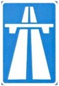
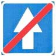
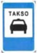

Место, начиная с которого действует порядок движения по автомагистрали, соответствующий правилам дорожного движения.
Дорога или проезжая часть, по всей ширине которой движение транспортных средств осуществляется только в одном направлении.

Место и направление выезда на дорогу или проезжую часть с односторонним движением.
Действие знака распространяется на полосу, над которой он расположен. Действие знака, установленного справа от проезжей части, распространяется на правую полосу.
Дорога, по которой движение транспортных средств общего пользования осуществляется по специально выделенной полосе навстречу общему потоку транспортных средств.
Конец названной дороги, обозначенной знаком 526.
Место и направление выезда на дорогу с полосой для транспортных средств общего пользования, обозначенную знаком 526.
Указывает число полос для движения безрельсовых транспортных средств по одной стороне движения или по всей ширине дороги на участке до ближайшего перекрестка и направление движения с каждой полосы на перекрестке; если знак установлен отдельно над полосой, то он показывает направление движения по этой полосе. Знак, разрешающий поворот налево с крайней левой полосы, разрешает с этой полосы также разворот.
В населенном пункте применяются знаки с белым фоном, за пределами населенного пункта - с синим, временные - с желтым.
Действие знаков, расположенных перед перекрестком, распространяется на весь перекресток, если другие знаки 53, установленные на нем, не дают иных указаний.
На стрелках знака 53 могут быть изображены дорожные знаки, которые запрещают движение определенных видов транспортных средств, указывают разрешенную минимальную или максимальную скорость или информируют о других особенностях порядка движения на полосе.

Обозначает нерегулируемый пешеходный переход.
Поворот налево запрещается.
Дорога, не имеющая сквозного проезда.
Обозначает место, где на узком участке дороги следует пропустить транспортное средство, движущееся навстречу.
Максимальная скорость (км/ч), которая рекомендуется на участке дороги при благоприятных метеорологических и дорожных условиях. Рекомендация распространяется до ближайшего перекрестка, при его отсутствии - на расстояние, указанное на табличке с дополнительной информацией 821, а если данный знак применяется в сочетании с предупреждающим знаком, то до конца опасного участка дороги.